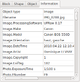

Modify slides Modify slides
Modify slides Modify slides
 |
Add a shot |
Append a shot to end of
the timeline |
 |
Remove shot |
Remove current selected
shot |
| To left |
Change the order of the
shot by moving the current selected shot, of a notch
towards the left |
|
| To right |
Change the order of the shot by moving the current selected shot, of a notch towards the right | |
 |
TV Margin |
Enable or disable rulers
corresponding to the margins of television sets. |
| Shot duration: |
Indicate here the
duration for the current selected shot. For the last shot of the slide, the notion of minimal duration is present. The following rules
apply to calculate the minimal duration of the shot:
|
| Total slide duration: |
The total slide duration
is display here. This duration takes into account possible adjustment of minimal duration of the shot. |
 |
Add title |
Add a new title block |
 |
Add file |
Add a new block of type
image or video. A file selection dialogue box appears
allowing you to select a file (it is not possible to
select several files.) |
|
Remive |
Remove the current block |
 |
Copy |
Copy the current block to
the ffDiaporama clipboard. The copy is made with the parameters of block such as they are defined for the current selected shot. |
 |
Cut |
Copy the current block to
the ffDiaporama clipboard and remove it from the slide The copy is made with the parameters of block such as they are defined for the current selected shot. |
 |
Paste |
Paste block from the
ffDiaporama clipboard and insert it. |
| Up |
Change the order of
blocks by moving the active block upward (towards the
background) |
|
| Down |
Change the order of blocks by moving the active block downward (towards the foreground) |
 =Title,
=Title,
 =Image,
=Image,  =Video)
=Video) icon appears for
the block which has the sound
icon appears for
the block which has the sound |
 |
Cliquer
sur ce bouton pour rendre visible ou invisible le bloc
actif. Note : Les blocs vidéos invisibles sont automatiquement mis en pause |
||
|
Ce
bouton n'est actif que pour des vidéos. Cliquer sur ce bouton pour donner le son, pendant ce plan, au bloc vidéo actuellement actif |
|||
 |
Cliquer
sur le bouton Recadrage et correction pour appeler la
boite de dialogue Framing and
correction of image or movie dialog box |
|||
| Géométrie
: Permet de sélectionner la contrainte
géométrique à appliquer au bloc. Trois type de contrainte sont disponibles :
|
||||
 |
Représente
la position horizontal du bloc de texte à partir de
la gauche. Cette position est exprimée en pourcentage (%) de la largeur total de l'image. |
|||
 |
Représente la
position vertical du bloc de texte à partir du haut
de l'image. Cette position est exprimée en pourcentage (%) de la hauteur total de l'image. |
|||
 |
Représente
la largeur du bloc de texte. Cette position est exprimée en pourcentage (%) de la largeur total de l'image. |
|||
 |
Représente la
hauteur du bloc de texte. Cette position est exprimée en pourcentage (%) de la hauteur total de l'image. |
|||
 |
Rotation
selon l'axe des X exprimée en degré. |
|||
 |
Rotation selon l'axe des Y exprimée en degré. | |||
 |
Rotation selon l'axe des Z exprimée en degré. | |||
 |
Forme |
Permet
de sélectionner une forme pour le bloc. La forme
sélectionnée servira :
|
|
| Bordure |
Épaisseur de la bordure : |
Définie l'épaisseur de la bordure (Cette valeur est exprimée en 1/1080eme de la hauteur de l'écran, c'est à dire qu'une valeur de 10 correspond à 10 points sur un écran FullHD 1920x1080, mais seulement à 6 points sur un écran 1280x720). | |
| Couleur de bordure : |
Définie la couleur du trait à utiliser pour dessiner la bordure | ||
| Type de trait de bordure: |
Définie le type de trait (plein, pointillé, etc...) | ||
| Ombre |
Position de l'ombre : |
Définie dans quel coin
l'ombre sera positionnée (Note : La position de
l'ombre est indépendante des rotations du bloc : Le
coin inférieur droit est toujours le coin
inférieur droit quelque soit les rotations
appliquées au bloc) |
|
| Distance de l'ombre | Définie la distance
entre le bloc et son ombre |
||
| Opacité |
Opacité |
Définie l'opacité
du bloc. Cette valeur s'applique également au texte
du bloc. |
|
 |
 |
Cliquer sur ce bouton pour
appeler la boite Define the
properties of a text block dialog box. |
|||||||||||
| Cliquer sur ce bouton pour
appeler la boite Apply
filters to an image or a video dialog box Ce bouton n'est actif que pour les objets contenant des images ou des vidéos. |
|||||||||||||
 |
Cliquer sur ce bouton pour
appeler la boite Cut a video
dialog box Ce bouton n'est actif que pour les objets contenant des vidéos. |
||||||||||||
En fonction du type
d'objet, différents contenus sont possibles :
|
|  | Affiche des informations
sur le bloc :
|
 WIKIPEDIA |
Description
of TV margins and l'overscan Description of EXIF - Exchangeable image file format |
 Translation
in progress (
Translation
in progress ( permettant de
changer de fichier
permettant de
changer de fichier